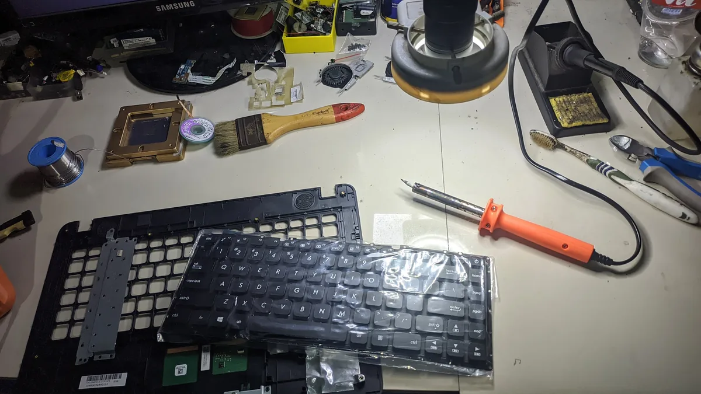
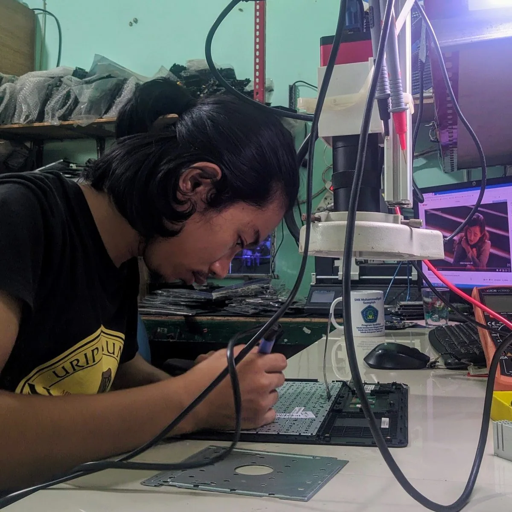
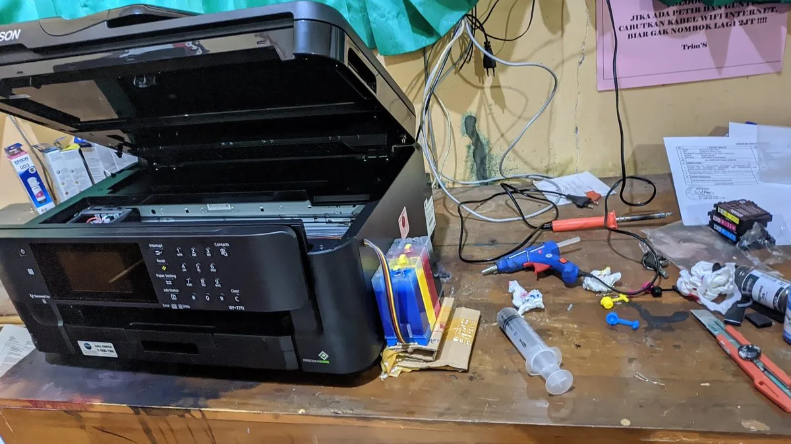
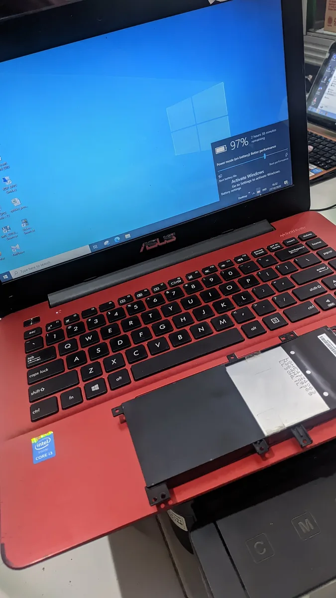
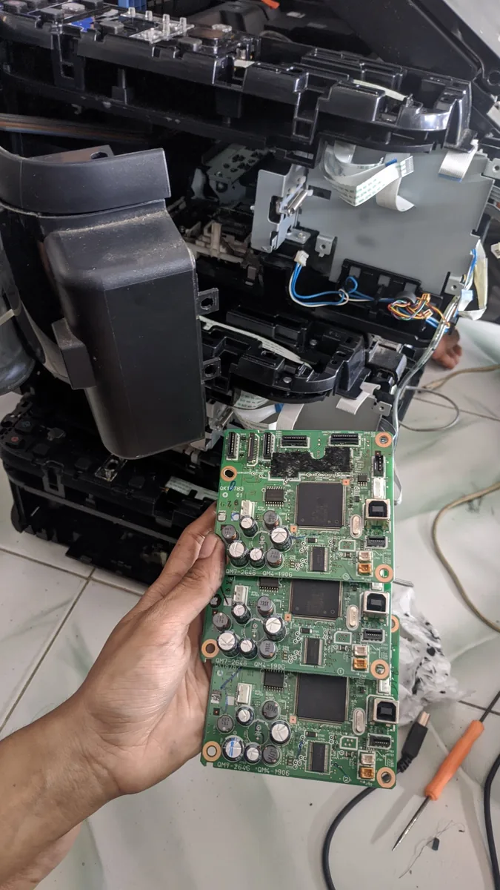
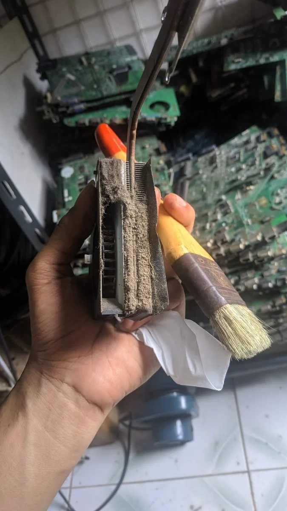
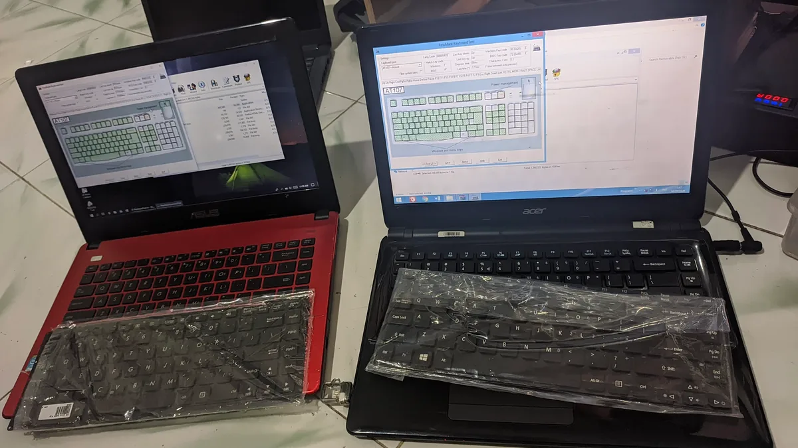

Servis laptop, komputer & printer terpercaya di Kemiri, Purworejo — plus print, fotokopi, pengetikan dokumen, dan jual beli perangkat. Konsultasi & diagnosa gratis.
Plandemic Space tidak lahir dari rencana bisnis. Lahir dari satu pertanyaan sederhana: kalau warga sekitar butuh bantuan — perangkat rusak, internet mati, tugas sekolah menumpuk — siapa yang bisa mereka andalkan? Pemiliknya sudah 10 tahun bekerja di bidang ini sebelum memutuskan pulang dan melayani dari rumah.
Nama Plandemic bukan sekadar plesetan dari pandemic — dan bukan soal teori apa pun tentang pandemi itu. 'Plan' dipilih karena kami percaya semua yang terjadi adalah rencana-Nya, termasuk masa sulit yang justru melahirkan tempat ini. Pengingat bahwa dari masa paling sulit pun, sesuatu yang benar-benar berguna bisa lahir. Plandemic Space adalah salah satunya.







"HP matot abis jatuh, udah sempet dibawa ke tempat lain tapi katanya korosi+partnya susah. Akhirnya coba ke sini. Nunggu beberapa hari krn nyari part, tapi tiap ada perkembangan selalu dikabarin. Alhamdulillah HP udah normal lagi. Mantap, jujur & komunikatif 🙏"
"Ganti keyboard sama speaker laptop di sini. Hasilnya rapi, semuanya normal lagi. Harganya juga lebih murah dibanding yg saya tanya di kota. Puas 👍"
"Udah beberapa kali ke sini, mulai dari ganti batre, beli laptop, sampe nanya-nanya soal laptop juga. Orangnya enak diajak diskusi, ga asal nyuruh beli yg mahal. Alhamdulillah laptopnya sekarang masih awet dipake anak kuliah 🙏"
"Kesini buat benerin tombol HP yg udah mangslep. Kirain HP jadul udah ga bisa dibenerin, ternyata masih bisa 😊 Sekarang tombolnya normal lagi, bonus softcase juga. Makasih mas!"
"Keren pelayanannya, hasilnya memuaskan, semangat mas 🔥🔥🔥"
Konsultasi langsung via WhatsApp — gratis, tanpa komitmen. Kami bantu dari diagnosa sampai selesai.
CHAT WHATSAPPTEMUKAN KAMI